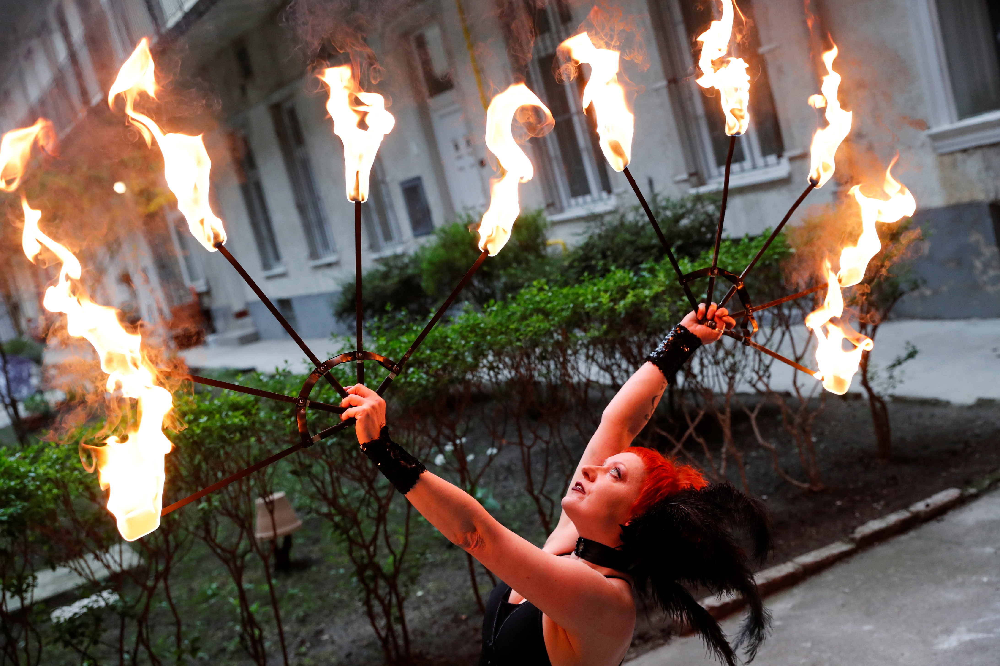

Juggling
inbox/ subsciptions
subscribe here

Juggling is performed by Ms Gleaf, a professional juggler, involving the manipulation of objects for recreation, entertainment, art or sport. The most recognizable form of juggling is toss juggling. She manipulates many objects at the same time, most often using one or two hands but also possible with feet. Jugglers often refer to the objects they juggle as props. The most common props are balls, clubs, or rings. The term juggling can also commonly refer to other prop-based manipulation skills, such as diabolo, plate spinning, devil sticks, poi, cigar boxes, contact juggling, hooping, yo-yo, and hat manipulation.
(Back to main page)
Address: 13500 Camino Del Sur, San Diego, CA 92129